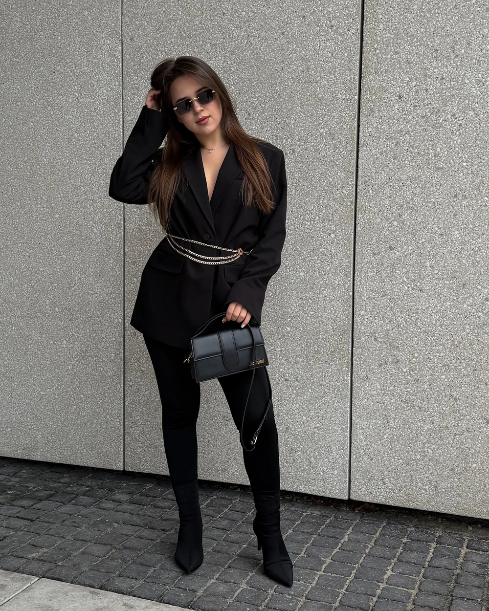
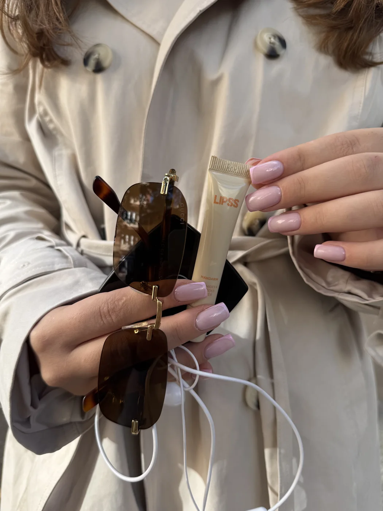

UGC-відео
Розпакування, демонстрація продукту, щоденні ритуали та lifestyle-історії. Формат і подача відповідно до вашого брифу.
Створюю естетичний контент для beauty-, fashion- та lifestyle-брендів. Показую продукт як природну частину повсякденного життя.


Я Анастасія — UGC-креаторка з Варшави. Спеціалізуюся на створенні естетичного контенту для брендів у нішах beauty, fashion та lifestyle.
Маю досвід співпраці з польськими та міжнародними брендами. Створюю відео, які органічно поєднують продукт із повсякденним життям і водночас підкреслюють його переваги, стиль та характер.
У роботі приділяю увагу візуальній цілісності, деталям і відповідності контенту бренду. Працюю з різними форматами — від розпакування до демонстрації продукту у використанні — та адаптую подачу відповідно до завдання й побажань клієнта.
Текстури, рух, щоденні ритуали. Різні історії, у центрі яких — продукт і його характер.
Предметна зйомка та живі кадри з продуктом. Натисніть на фото, щоб розглянути ближче.
Сумка — у русі міста. Косметика — у щоденній рутині. Продукт — у житті, яке хочеться відчути.
Від першої ідеї до фінального кадру — з увагою до стилю та цілей бренду.
Розпакування, демонстрація продукту, щоденні ритуали та lifestyle-історії. Формат і подача відповідно до вашого брифу.
Продуктові деталі, текстури та композиції. Естетичні фотографії для соціальних мереж і комунікації бренду.
Вертикальні відео з різними ідеями та початками. Контент для каналів бренду й рекламних кампаній.
Обговорюємо продукт, завдання, аудиторію та бажаний результат.
Узгоджуємо концепцію, подачу й деталі майбутнього контенту.
Створюю матеріали з увагою до світла, деталей і стилю бренду.
Передаю фінальні файли. Формат, терміни та права погоджуємо заздалегідь.
Пакети для різних завдань. Наповнення, права на використання та терміни узгоджуємо відповідно до брифу.
Один сильний ролик для тесту або швидкого запуску.
Три відео з різними підходами — для А/Б тестів та кампаній.
Індивідуальний набір креативів під потреби бренду.
Орієнтовні ціни з поточного портфоліо. Фінальну вартість погоджуємо перед початком роботи.
Зазвичай 5–7 робочих днів від брифу до готового файлу. Термінові замовлення обговорюємо окремо.
Платформи, термін і спосіб використання погоджуємо індивідуально до початку роботи.
Включено один раунд правок. Додаткові раунди — за домовленістю.
Напишіть мені про ваш бренд, продукт і бажаний формат. Разом визначимо обсяг робіт і наступні кроки.
Розкажіть про свій продукт та ідею — обговоримо, як втілити її в контенті.